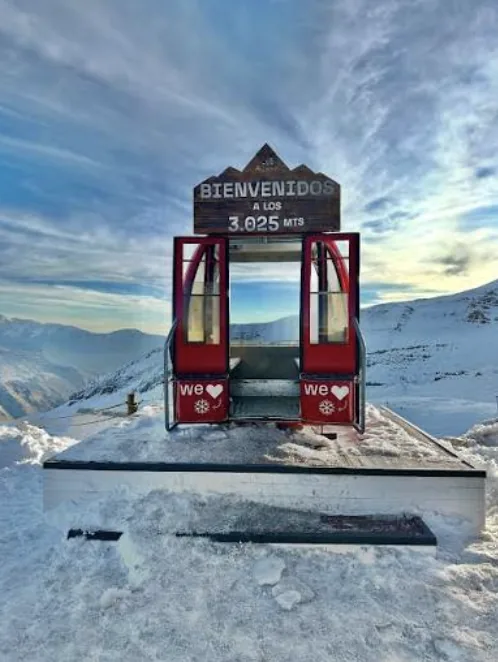
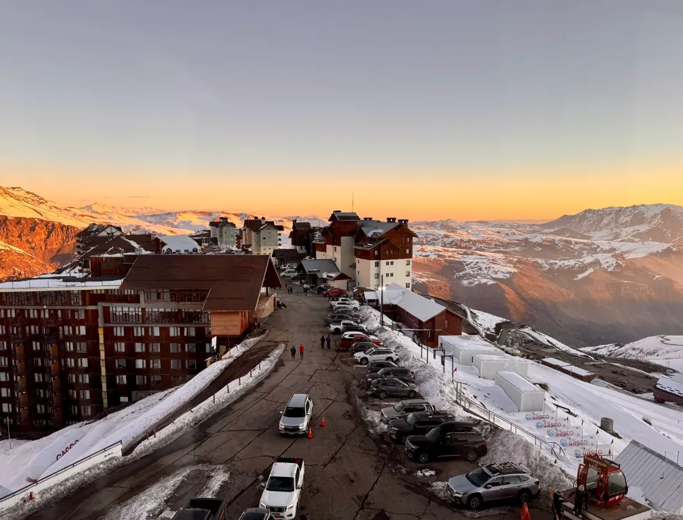
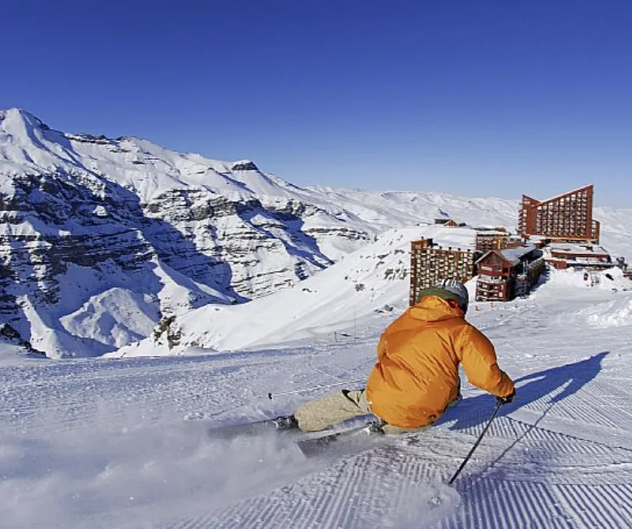
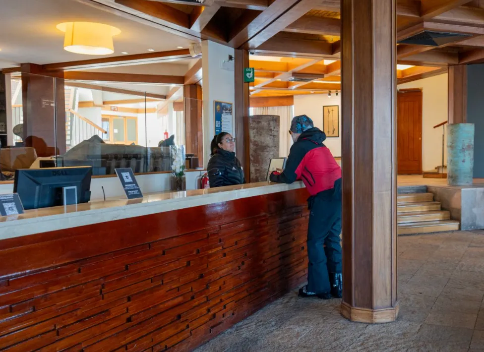
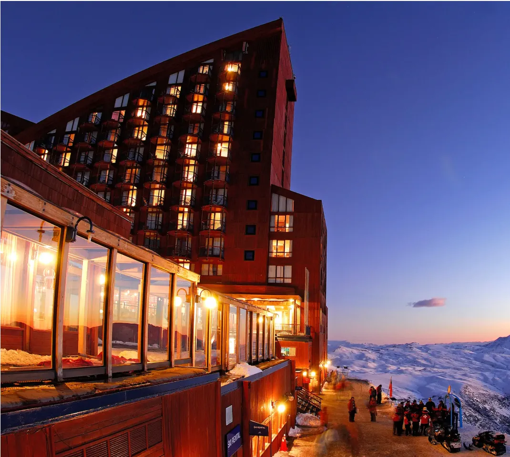
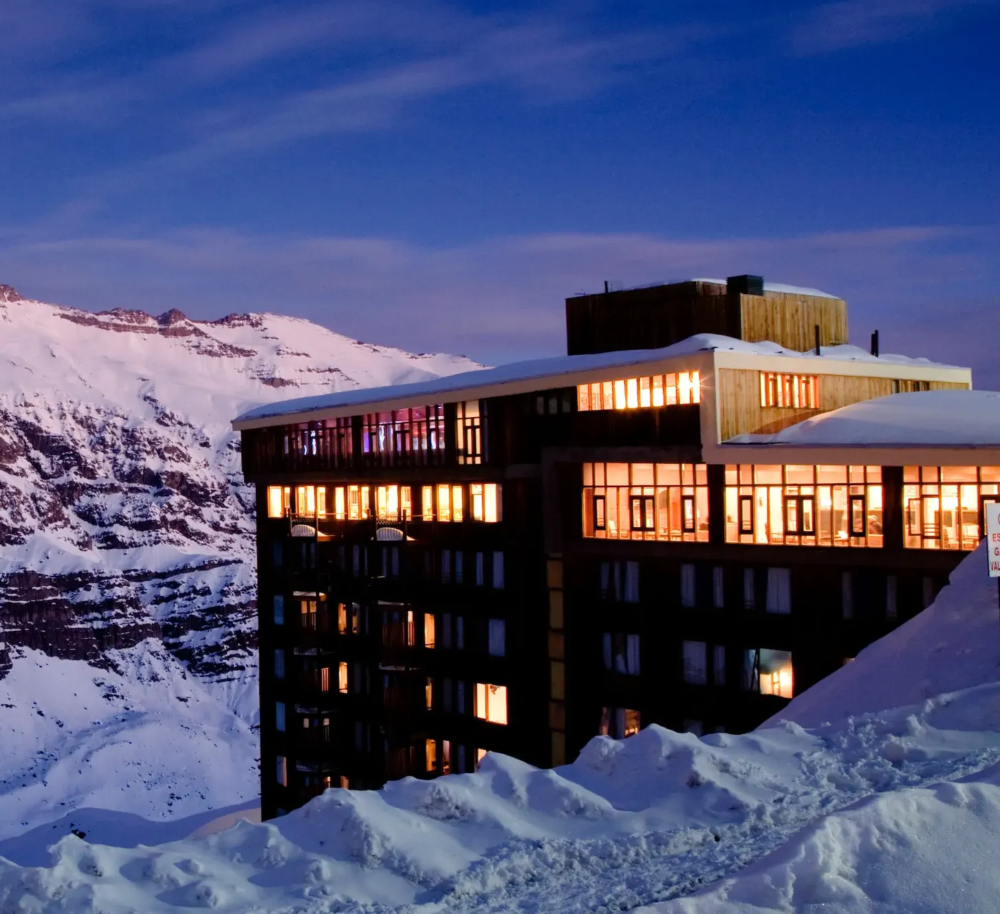
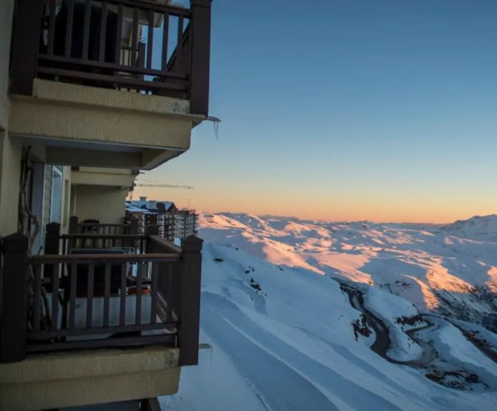

01
Solo quiero conocer la nieve
Puedes subir y vivir la nieve sin comprar pase de esquí. Para usar la góndola o remontes necesitas un ticket específico.

Valle Nevado puede ser un solo día de nieve desde Santiago o una estancia de varios días en la montaña. La decisión depende de lo que quieras hacer: conocer la nieve, subir en góndola, esquiar o despertar en los Andes.

Puedes subir y vivir la nieve sin comprar pase de esquí. Para usar la góndola o remontes necesitas un ticket específico.

Elige un tour dedicado o traslado que deje tiempo real en Valle Nevado. Los circuitos genéricos con muchas paradas pueden quedarse cortos.

Tiene más sentido para esquiadores, familias o viajeros que quieren convertir los Andes en parte central del viaje.
* Fechas y operación dependen de nieve y clima. Consulta siempre el reporte oficial de montaña.
Los tres hoteles oficiales responden a perfiles diferentes. Los apartamentos forman una cuarta categoría con otra lógica de servicios.

51 habitaciones y acceso directo a pistas desde el lobby.
Buscar alojamiento →
Muy cerca de las pistas y con más espacios de entretenimiento familiar.
Buscar alojamiento →
Más sencillo, a unos 100 m de las pistas, con espacios sociales y actividad nocturna.
Buscar alojamiento →
Aconcagua Ski Residences y los apartamentos del complejo funcionan bien para grupos que buscan autonomía. No son un cuarto hotel: comidas, servicios y pases pueden tener reglas distintas.
La distancia es corta, pero la carretera sube con muchas curvas. En invierno, hielo, estado de la vía y exigencia de cadenas pueden cambiar rápidamente. Para la mayoría, un transfer o tour especializado es la opción más previsible.
| Valle Nevado | Góndola, estación de esquí, hoteles y alta montaña | Quien quiere esquiar o vivir una estación real |
| Farellones | Atracciones y juegos de nieve | Familias y no esquiadores |
| Ambos | Dos días de montaña con propuestas diferentes | Quien dispone de tiempo para comparar |
Pase de esquí / góndola
Tickets oficiales Valle Nevado →Valle + FarellonesExcursión / traslado
Ver tour Valle Nevado + Farellones →HotelesCompara alojamiento
Buscar alojamiento →Assist CardSeguro de viaje
Cotizar seguro →Algunos enlaces pueden generar una comisión para Lipe Travel Show sin modificar el precio pagado por el viajero.